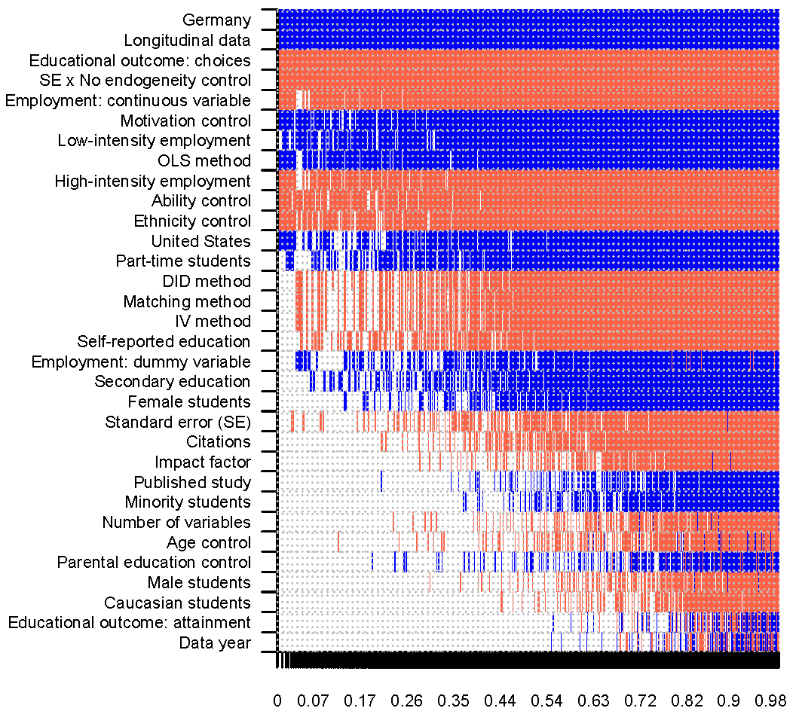

Educational outcomes have many determinants, but one that most young people can readily control is choosing whether to work while in school. Sixty-nine studies have estimated the effect, but results vary from large negative to positive estimates. We show that the results are systematically driven by context, publication bias, and treatment of endogeneity. Studies neglecting endogeneity suffer from an upward bias, which is almost fully compensated by publication selection in favor of negative estimates. Overall the literature suggests a negative but economically inconsequential mean effect. The effect is more substantive for decisions to drop out. To derive these results we collect 861 previously reported estimates together with 32 variables reflecting estimation context, use recently developed techniques to correct for publication bias, and employ Bayesian model averaging to assign a pattern to the heterogeneity in the literature.
Fig: Publication bias, country heterogeneity, and method choices drive the results

Reference: Katerina Kroupova, Tomas Havranek, Zuzana Irsova (2024), "Student Employment and Education: A Meta-Analysis." Economics of Education Review 100, 102539.